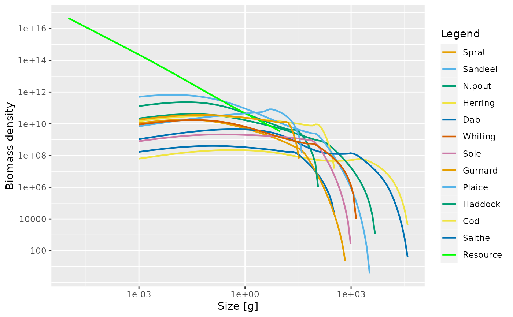
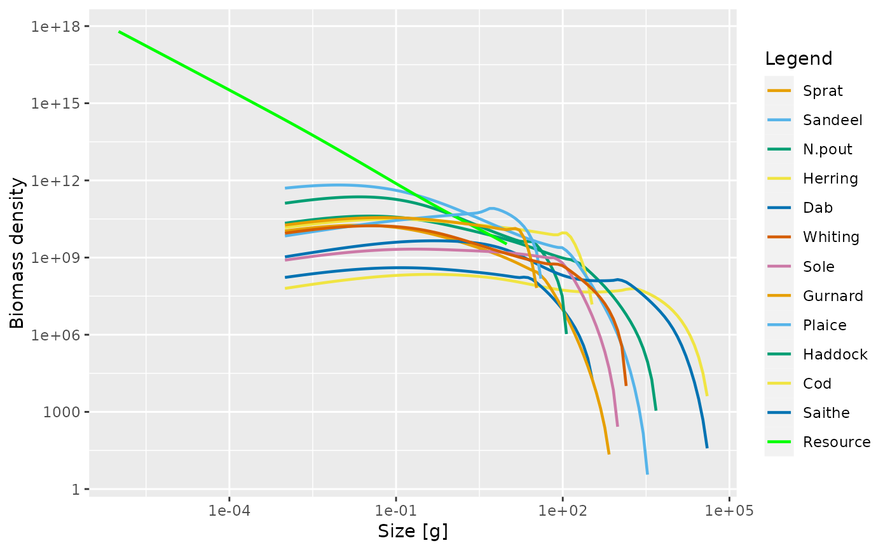
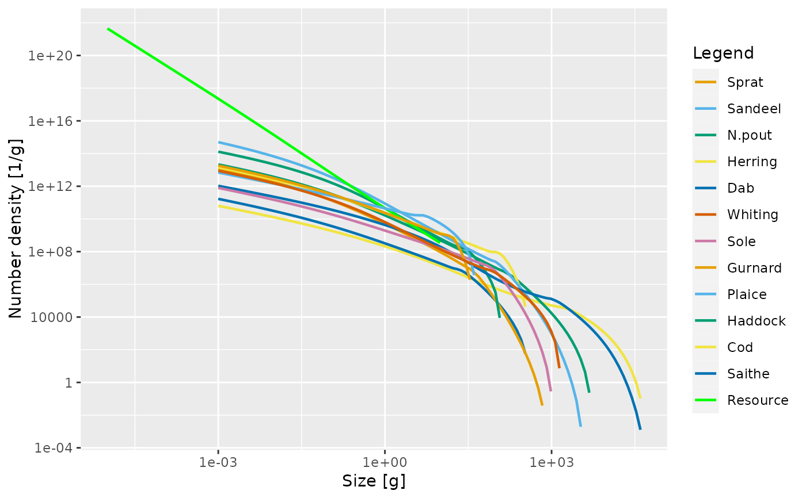

Plots the number density multiplied by a power of the weight, with the power
specified by the power argument.
plotSpectra( object, species = NULL, time_range, wlim = c(NA, NA), ylim = c(NA, NA), power = 1, biomass = TRUE, total = FALSE, plankton = TRUE, background = TRUE, highlight = NULL, ... )
Arguments
| object | An object of class MizerSim or MizerParams. |
|---|---|
| species | Name or vector of names of the species to be plotted. By default all species are plotted. |
| time_range | The time range (either a vector of values, a vector of min and max time, or a single value) to average the abundances over. Default is the final time step. Ignored when called with a MizerParams object. |
| wlim | A numeric vector of length two providing lower and upper limits for the w axis. Use NA to refer to the existing minimum or maximum. |
| ylim | A numeric vector of length two providing lower and upper limits for the y axis. Use NA to refer to the existing minimum or maximum. Any values below 1e-20 are always cut off. |
| power | The abundance is plotted as the number density times the weight
raised to |
| biomass | Obsolete. Only used if |
| total | A boolean value that determines whether the total over all species in the system is plotted as well. Default is FALSE |
| plankton | A boolean value that determines whether plankton is included. Default is TRUE. |
| background | A boolean value that determines whether background species are included. Ignored if the model does not contain background species. Default is TRUE. |
| highlight | Name or vector of names of the species to be highlighted. |
| ... | Other arguments (currently unused) |
Value
A ggplot2 object
Details
When called with a MizerSim object, the abundance is averaged over the specified time range (a single value for the time range can be used to plot a single time step). When called with a MizerParams object the initial abundance is plotted.
See also
Other plotting functions:
displayFrames(),
plot,MizerSim,missing-method,
plotBiomass(),
plotDiet(),
plotFMort(),
plotFeedingLevel(),
plotGrowthCurves(),
plotPredMort(),
plotYieldGear(),
plotYield(),
plotlyBiomass(),
plotlyFMort(),
plotlyFeedingLevel(),
plotlyGrowthCurves(),
plotlyPredMort(),
plotlySpectra(),
plotlyYieldGear(),
plotlyYield(),
plotting_functions
Examples
data(NS_species_params_gears) data(inter) params <- suppressMessages(newMultispeciesParams(NS_species_params_gears, inter)) sim <- project(params, effort=1, t_max=20, t_save = 2, progress_bar = FALSE) plotSpectra(sim)plotSpectra(sim, time_range = 10:20)plotSpectra(sim, time_range = 10:20, power = 0)